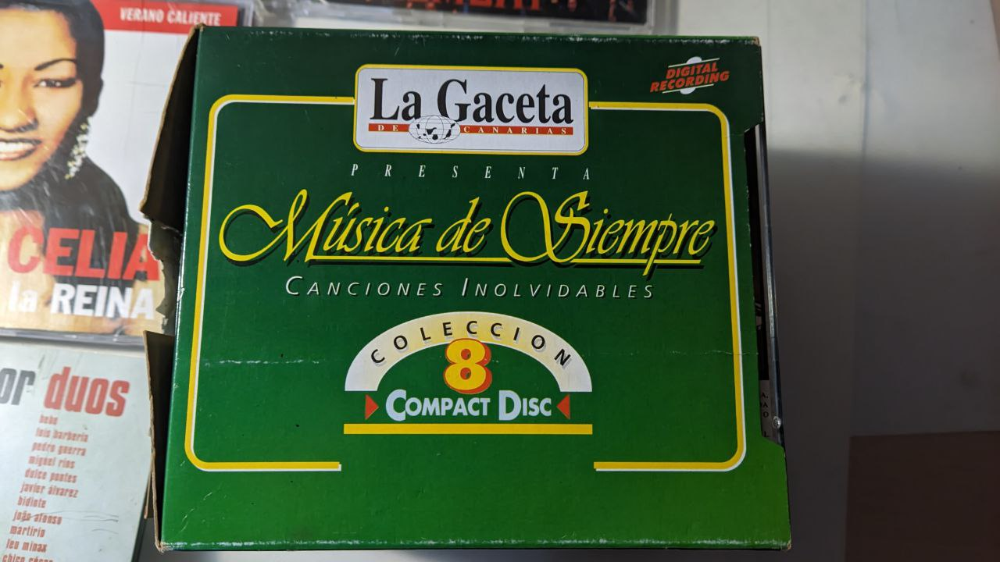
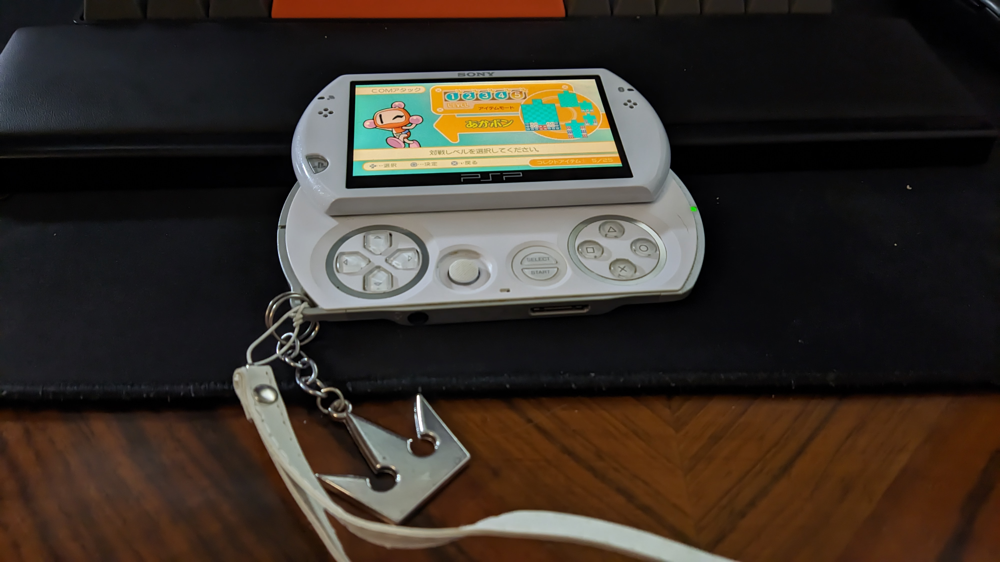

Hace unos mesecillos me compré una PSP Go. Es una consola que recuerdo ver en su época y pensar que era un engañabobos, que era una locura sacar una PSP que dependiese totalmente de un catálogo digital, cuando ni yo ni ninguna persona de mis círculos concebíamos un catálogo de juegos de PSP que no fuesen los UMD comprados de segunda mano en el GAME o en el Daily Price. Es algo que sigo afirmando, es evidente que era una decisión estúpida. Es cierto que era una época de cambios, la PS3 tenía ya unos pocos años cuando salió este modelo de PSP y ya las tiendas digitales comenzaban a tener forma, pero no para unos chavales de colegio o primeros de instituto como nosotros. No obstante, el diseño de esta consola me parece que tiene lo mejor de los diseños tecnológicos de la época: los teléfonos de Sharp, Panasonic o Sony, de tapa o deslizantes, con pantallas que se giraban para esconder los botones y hacerlos aún más portables. Diseños de hardware interesantes, arriesgados y divertidos. En esta época, la tecnología debía ser algo más que la misma, el cacharro debía entrar por los ojos, tener una personalidad marcada, y muchas veces se utilizaba ese gancho más que el propio interés de la mejora técnica (de hecho, siento que el gancho estético se utilizaba para que nos entrase por los ojos que realmente no era el mismo aparato y que sí había mejoras internas).
La PSP que me compré venía marcada por un hombre que en su día fue un adolescente que la usó con gozo. Luis (así indicaba el usuario) me dejó todos sus datos en la consola, y pude realizar mi pequeño ejercicio que se encuentra en una fina línea entre la arqueología y la invasión de privacidad durante la tarde en la que me llegó el cachibache. Fondos de rock and roll, fuegos y calaveras, una colección de Minis (los juegos económicos de la PlayStation Store, entre ellos joyitas como SimCity o el Tetris de cuando lo publicaba EA) y algún otro juego para esa demografía, como el Monster Hunter Freedom Unite, el FIFA o el Gran Turismo. Yo he consumido MUCHOS Reels de gente grabando vídeos ASMR de una PSP con el juego de Inital D., y, madre mía, que guay me sentí cuando le di al Gran Turismo y vi esa intro con dubstep y una CGI guapísima llena de coches que no conozco, porque no tengo ni idea de coches. Hay algo especial en jugar en la resolución y el hardware original en el que fue creado un videojuego que es indescriptible. Vamos, que iba durísimo.
Continuando con la espeleología, recordemos que la PSP era un centro multimedia. Tenía las canciones que podría uno esperar de un mp3 de un adolescente del 2010: LMFAO, cancion_anuncio_citroen_mp3.mp3, alguna de Melendi, Akon, I’m Blue de Eiffel 65… y entre las imágenes que tenía, la mitad eran capturas de pantalla del Monster Hunter y la otra mitad eran fotos de Michelle Jenner. Un poco mal rollero sí, pero siendo realistas era esperable algo así, suerte que no me encontré algo peor. Ah, también estaba esta foto, no sé, me pareció graciosísimo:

Es curioso como, pese a que la PSP Go fue una consola que quería digitalizarse completamente, no podía evitar seguir teniendo ese aire analógico inconfundible que aún existía en los primeros aparatos digitales, esa manualidad de escoger con delicadeza qué insertar en ella y qué poner en sus menús, ese ser dueño de tus archivos digitales (no literalmente; como bien sabemos no eres dueño de nada que salga de la PSN). Es una consola que quizás en su día no podía disfrutarse tanto, pero creo que cada año que pasa es su nuevo mejor momento, porque siento que necesitamos cada vez más poder volver a un entendimiento con la tecnología más parecido al de esa época, y los problemas que tenía la PSP Go en su día ya no lo son más. Este es el texto más pichavieja que escribiré nunca, pero no tengo miedo en afirmar que creo que hay una parte de nosotros se perdió y necesitamos que vuelva, y está revoloteando en estas llanuras donde crecían los puertos USB-Mini-A 2.0 y las Memory Stick Pro Duo.
Yo nací en el año 2000, y no voy a negar lo evidente. Si valoro tanto la década previa al apagón analógico puede ser por pura y simple nostalgia a mi niñez y adolescencia. No obstante, voy a intentar alejarme de eso lo máximo que pueda mientras escribo estas palabras (dudo conseguirlo) y analizar el uso de las tecnologías de esa época desde un punto de vista de las necesidades que tenemos hoy en día, contarles mi relación con la misma y cómo estoy intentando cambiarla.
Un día vi una foto en tuiter que me dio que pensar. Me he dado cuenta de que muchas de las reflexiones que he estado rumiando últimamente vienen de eso, fotos de tuiter. Un poco deprimente si me preguntas. La foto en cuestión era de una Lan Party llena de personas con sus ordenadores con monitores de tubo y jugando a World of Warcraft, a Diablo, cosas así. Lo que el usuario comentaba era algo como que habíamos retrocedido en nuestra relación con la tecnología, y que en esa época era una en la que existía una humanidad en el uso de los ordenadores y el de los medios de comunicación online. Añado yo, quizás, ¿una época en la que los ordenadores y la comunicación por internet estaba al servicio de nosotros y no nosotros a su servicio? Hay muchos matices en una frase así con los que no estoy de acuerdo realmente. En la situación actual de la comunicación instantánea por internet hay ventajas que no querría quitarme de encima. Las redes sociales, pese a estar comidas, regurgitadas y vomitadas por filtros de algoritmos, nos sirven también para tener información honesta y democratizada. Además, me mantienen en contacto con mis amigos en esos momentos en los que no podemos tener nuestras conversaciones profundas o no podemos hablar sobre cómo estamos con una dedicación plena (es decir, cuando nos pasamos putos memes). No obstante: ¿no creen que quizás todas estas ventajas son algunas que realmente ya teníamos hace unos años? Yo veo mi pasado, y el único cambio es que yo he crecido, pero seguía teniendo lo mismo que ahora: un ordenador que tenía acceso a internet, redes sociales, mensajería instantánea y si estuviese en otro país podría comunicarme con mi familia y amigos.
¿Qué es entonces aquello que echo de menos, o qué creo que es lo que necesitamos recuperar? Creo que son dos elementos principalmente: la fisicidad y la conexión activa. Voy a ir punto por punto.

En primer lugar, cuando hablo de fisicidad, pienso más bien en la acción pausada de uso de los aparatos y la importancia de que sea atractivo en lo táctil y palpable. Por poner un ejemplo: creo que no es lo mismo desbloquear mi Poco X3 Pro después de recibir una notificación que abrir la tapa a un flip phone para hacer una llamada o jugar a un juego en Java. Creo que hay un sentimiento diferente porque muchos de estos móviles, consolas o reproductores multimedia tenían un diseño pensado en ser diferente y no ser un estándar (nota: habían estándares, pero no estaban tan definidos como ahora). Esto generaba a veces diseños fallidos y problemas, pero por otro lado creo que le daba cierto atractivo a usarlo. No sé, quizás se entiende más si hablo de los típicos videos de ASMR de gente con consolas desde la Wii hacia atrás, teles de tubo, Walkmans, etc, ustedes me entienden (de nuevo, es que me salen muchos, entrené al algoritmo). Quitando la parte nostálgica, hay algo satisfactorio en lo palpable, ¿no? Quizás es solo cosa mía, que le doy importancia a donde veo, juego y leo las cosas, y sé de personas que no le dan tanta importancia a eso en su vida y les da un poco más igual, y me parece sano también.
Aunque realmente, creo que lo que más echo de menos es lo segundo, lo que he llamado conexión activa. Cuando hablo de conexión activa, quiero decir el dedicar, activamente, momentos del día para conectarme. Lógicamente, se podían generar relaciones tóxicas y de dependencia como con cualquier otra cosa que hicieran que esos momentos fuesen muy largos. Pero creo que hemos perdido verbos: ya no utilizamos acciones para conectarnos, porque siempre estamos conectados. Lo más parecido que creo que existe aún es el entrar a Discord. Y si lo piensan, vuelve a lo mismo que me refería antes: la humanidad de conectarte con otros activamente. Una conexión activa te hace más partícipe de lo que haces mientras estás conectado y menos espectador pasivo. Y no sé ustedes, pero yo siento que me hace mucho daño esta pasividad, que, paradójicamente, me aleja de lo que tengo alrededor mientras me muestra en mi cara todo lo que existe en el mundo.
Hablando con mi amigo Andrés, un día nos dijo (a modo de hipérbole o hot take, pero intentando enviarnos un mensaje) que él ya ha asumido que su vida es lo que ocurre entre la hora que dedique a ver Reels y la siguiente. Vale, esto suena fuerte, triste y tiene un poco de la imagen esa en 244p de un móvil pegado a una mano, conectando los cables a las venas del brazo, esa imagen que se comparte por Facebook y te pasa tu padre por el Whatsapp (quizás todo este texto tiene ese tufillo), pero es que tiene su parte de triste verdad. De hecho, siento que muchas de mis relaciones con la lectura, los videojuegos o incluso con otras acciones del día a día como el deporte, pasear o hacer tareas responsables se han visto directamente influenciadas por años y años de esto. Lógicamente, también por la pandemia, pero en fin, no voy a hablar de la pandemia ahora, no quiero hacernos eso. Y desde hace mucho, siento que mi cuerpo me pide frenarlo, y reorganizar mi relación con la tecnología, con la inmediatez y con mis amistades. De la misma manera que he ido necesitando alejarme de esta relación con la tecnología, también he ido necesitando momentos con mis seres queridos que sean más pausados, más reales y más palpables.
He aquí donde cobra sentido esto de la PSP, y voy adelantando la conclusión y el por qué de este texto: la manera que he encontrado de mitigar estos daños cerebrales que tengo tan interiorizados ha sido intentar volver a relacionarme con aparatos de esa época. Por ahora, creo que me ha funcionado, aunque sea en menor medida. El camino que he marcado comienza por volver a la época entre lo digital y lo analógico, utilizando ese tipo de hardware para tener un contacto más directo con el cacharro y alejarme de las redes sociales, pero sin negar el uso de las mismas y de las ventajas que me aportan para comunicarme, además de usar archivos digitales pirateando como un loco y que tanto yo como mis seres queridos seamos poseedores del arte que nos gusta. Voy a compartir y detallar un poco cómo estoy intentando cambiar mi relación con todo en lo que la tecnología interviene: los videojuegos, la música, el cine, la comunicación y las relaciones.
Con los videojuegos quizás es lo más fácil de ver. No hace falta detallar mucho, creo que hay ciertos videojuegos que se disfrutan más si nos adentramos a ellos cómo se esperaba que jugásemos en esa época, ya sea por hardware o por la predisposición. Es decir, creo que no sería necesario montar una asamblea para llegar a la conclusión de que jugar a juegos de Nintendo DS es mejor en el hardware original. No obstante, hay otros que sí que entran más en el terreno de la opinión y de los gustos personales. No creo que un juego de PSX haya que jugarlo en un televisor de rayos catódicos para disfrutarlo más que lo que lo disfrutarías en una Retroid Pocket 4 Pro (una consola portátil, emulando una consola de sobremesa). A mi, personalmente, me gusta más lo primero, pero creo que es más bien por esa predisposición y fisicidad de la que hablaba antes, que me conecta más profundamente con la pieza que voy a experimentar. Del mismo modo, creo que esta predisposición se puede lograr emulando el juego. A mi, personalmente, no me funciona tanto, pero los disfruto igualmente y no quiero deshacerme de esa manera más moderna de jugar, porque para mi, la emulación y la piratería son conceptos sagrados alrededor del cacharreo, la investigación, el socialismo, y simplemente me encanta. Pero es en ese sentimiento analógico donde suelo conseguir conectarme más activamente con lo que estoy haciendo, formando parte de ese “ritual”.
Con lo que me parece más complicado traer lo analógico de vuelta es con otras cosas, concretamente, con la comunicación, la música y el cine. Pero para cada cosa he tenido algunos remedios que me han dado cierta paz y me han sacado de estos bucles agónico-algorítmicos.
Para la música es complicado, porque de la manera en la que más he disfrutado en mi vida de la música ha sido gracias a las herramientas más modernas que tenemos con Spotify o con Youtube, por ejemplo. Sí, es una mierda, ya que son pozos de basura para los artistas. Pero es cierto que el repositorio de música que han recopilado es simplemente infinito y tiene todo lo que necesito. ¿Me deshago de esto también? ¿Me hace algo de daño? Creo que daño lo que es daño, no, no me hace. Pero de la misma manera en la que conviven los emuladores y los televisores que hacen ruiditos molestos cuando están encendidos, me he divertido mucho utilizando los medios más físicos, y “analógicos” para la música y para el cine. Uso comillas porque no voy más atrás (ni tengo interés) de los DVD y los CD, que son digitales, pero, como con la PSP, creo que son de esta época en la que lo digital aún tenía algo de analógico, no sé si me explico.
De esta forma, añado a mis rutinas dos momentos que me ayudan a salir de mi mismo y ver todo con otros ojos. En primer lugar, el momento de hacer arqueología como con la consola del bueno de Luis: buscar cedés en casa de mis padres, de mis amigos, en el rastro de Madrid o en tiendas de segunda mano de discos por La Laguna. El no saber qué te vas a encontrar y atreverte con discos y recopilatorios que no te sueles atrever porque te dan curiosidad, es algo que he agradecido. En segundo lugar, me he comprado un discman por 3 euros y en algunos momentos lo he conectado para escuchar un algo de inicio a fin, desconectándome del teléfono durante esa hora, haciendo alguna actividad de fondo como pasear o lavar los platos, o a veces simplemente, escuchar y ver girar el disco. Si no fuera por hacer esto, no habría encontrado una colección de 7 discos hecha por La Gaceta de Canarias en el año catapún, que no está por ningún lado en internet, y me parece muy bonito coger uno de esos y ver qué me encuentro. Ahí están en mi estantería junto con un disco con la caja medio reventada de la banda sonora del Mortal Kombat. Y mi intención es que esto siga ahí y vaya agrandándose con los años, llenándolos de historias y de discos Verbatim también, aumentando mis momentos de conexiones activas con la música.
Lo mismo lo puedo aplicar con el cine, aunque me gustaría destacar más bien otra aproximación a lo digital que he usado más y me ha gustado mucho también: unos buenos torrents. No voy a dejar de usar Stremio, pero de vez en cuando me he bajado alguna serie completa y he buscado los subtitulos en OpenSubtitles, o he arrejuntado colecciones de películas como las de Shin-Chan en castellano, y todo esto lo guardo en Garoé, Barbusano, Perenquén o Saperoco (es que, he bautizado a mis discos duros, sé que es de estar un poco loco pero ya se los explicaré en un futuro créanme). Ya sumandole una máquina con Plex Media Server, o probablemente en un futuro, un servidor NAS, es simplemente una fantasía. Esto ni siquiera es tan “vuelta a lo analógico”, simplemente es que piratear a veces me hace sentir que agarro estos archivos con las manos y los guardo debajo de un colchón. Igual más que fisicidad, lo que me da es seguridad, no sé. Tiene algo de físico también el decir “en este disco duro está todo”, o categorizarlo en diferentes discos duros.
Para concluir, mi relación con las comunicaciones no ha cambiado mucho, pero tengo interés de hacerlo. Me encuentro actualmente explorando diferentes maneras de alejarme del teléfono y de las redes sociales para enfrentarme a ellas desde una perspectiva mucho más controlada y activa. Creo que desinstalar aplicaciones no es algo que me sirva; siempre acabo haciendo trampas al solitario y volviendo. Es algo que desde luego puede llegar ayudar, pero a mi actualmente, no. Por ahora, creo que voy a intentar seguir la misma estela que con las consolas: quiero volver a algún tipo de hardware que me haga poder apagar el teléfono, pero no estar incomunicado o no poder sacar fotillos o escuchar música si me apetece. He estado dandole vueltas a una Blackberry, a algún teléfono de tapa de la marca Aquos o Panasonic (resulta que en Japón y Corea se siguieron haciendo hasta bastante tarde e incluso funcionan con Android). Me gusta de estos aparatos como tienen diseños interesantes y me parecen físicamente satisfactorios de usar por sus teclados y por sus formas no convencionales actualmente. Además, son lo suficientemente limitantes como para no sentir la necesidad de desbloquearlos y refrescar y dar saltos entre aplicaciones. Y no me hacen sentir inseguro por estar incomunicado. No sé, es algo que estoy barajando y quiero investigar y probar más. Pero desde luego, necesito un cambio, y esta filosofía del “dumbphone” parece un camino que vale la pena explorar y compaginar. Veremos en un futuro si es algo que me sirve o acabo con un cacharro bonito pero inservible por ahí en la habitación.
Como nota al pie, me gustaría añadir también la gracia que tiene utilizar cámaras de fotos digitales. Me compré un par en tiendas de segunda mano por lo que valen dos cafés y me divertí mucho el verano pasado sacando fotos con ellas. Creo que personalmente, que el hardware tenga un diseño atractivo y que sea un aparato dedicado a una acción específica a mi me hace disfrutar mucho de su uso y darle una capa de humanidad que no tiene la conveniencia de tenerlo todo junto en un mismo hardware.
Soy consciente de que este texto es algo más pesado, tiene mucho de anecdótico y de detalles sobre maquinitas que realmente no tienen una importancia más allá de mi propia vida. A veces, me siento un poco idiota por dedicarle tanto tiempo a pensar en estas pequeñas y estúpidas maquinitas, y cuando me doy cuenta de ello lo mejor que puedo hacer es desconectar del todo e intentar vivir mi vida y hablar con mis cercanos. Creo que por muchos parches que uno ponga, esto debe ser una constante y lo importante es arreglar la relación con la tecnología para poder ser capaz de ver el mundo y disfrutar de lo que mis ojos ven fuera de las pantallas. Pienso honestamente que volver a ser un poco analógicos nos puede ayudar en estos momentos para llegar a ese punto. Es el camino que yo he decidido explorar, y que concuerda con lo que yo disfruto del cacharreo, los aparatejos y la conservación de los mismos. Lo único que busco es, en estos momentos tan tormentosos, no olvidarme de las cosas que importan de verdad y dedicar mis tiempos de manera más placentera. Espero poder conseguirlo. Por ahora, voy a deslizar la pantalla superior de la PSP Go y echarme una partidilla al Bomberman: Panic Bomber, que está todo en japonés pero ya aprendí a moverme por los menús y está guapísimo.
